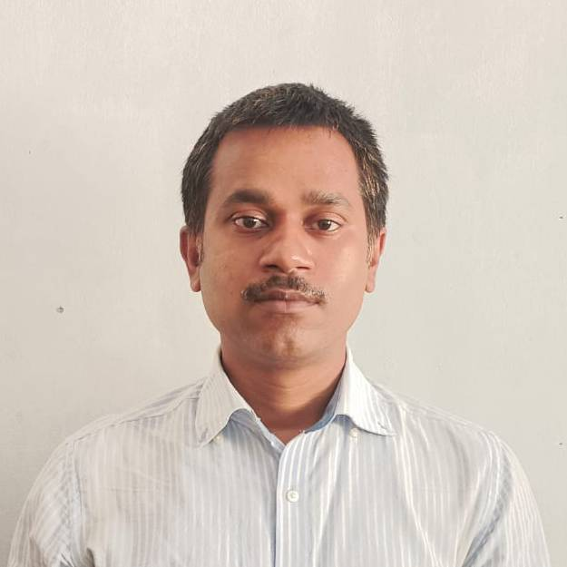

2026 — now
Chief Technology Officer
Cyber Bit Byte · Dhaka
Delivery · Operations · Quality
Technical leadership / Dhaka, Bangladesh
Software engineering, leading technology, business operations, teams, and scalable products from idea to impactful delivery.

The best delivery work happens where product thinking, engineering judgment, and calm communication meet.
I connect the dots from requirement gathering to release: shaping the backlog, aligning people around the right architecture, removing bottlenecks, and keeping quality visible throughout the sprint.
One perspective across the whole product lifecycle.
Agile roadmaps, sprint planning, KPIs, risk registers, stakeholder alignment, and release readiness.
Laravel architecture, REST APIs, microservices, relational data models, authentication, and security.
Query optimization, code review, documentation, CI/CD collaboration, debugging, and team mentorship.
From database applications to enterprise platforms serving millions of daily users, every chapter added a new way to make software and teams work better.
Cyber Bit Byte · Dhaka
TechSpire Labs · Dhaka
TechTrioz Solutions · Dhaka
Somoy Media Limited · Dhaka
Ipsita Software Limited · Dhaka